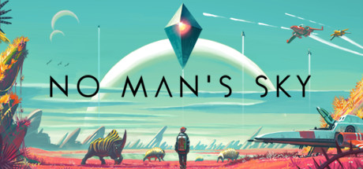

Ruimtegame No Man's Sky krijgt grote update
Op de website zet Hello Games uiteen wat er is veranderd door de zogeheten ‘Foundation update’. Zo kunnen spelers gewassen verbouwen, kampen opbouwen en vrachtschepen kopen. Daarnaast kunnen ze een onbewoonde planeet claimen door er een eigen basis te bouwen. Ook zijn er nieuwe grondstoffen toegevoegd. In No Man’s Sky kan de gebruiker zich een ruimtereiziger wanen in een wereld van een haast oneindig aantal sterrenstelsels, planeten en wezens. Het universum werd met een algoritme gecreëerd, waardoor de programmeurs zelf ook niet weten wat er allemaal in de game zit. De verwachtingen voor de game waren hooggespannen, zo hadden volgens datasite SteamSpy al 100.000 mensen het spel aangeschaft op de dag dat het uitkwam. Na de lancering in augustus was er naast lof ook veel kritiek over het spel. Zo zouden de planeten repetitief aanvoelen en was het spel meer gericht op handel dan op werelden ontdekken. Het bleek daarnaast niet mogelijk te zijn om andere spelers tegen te komen.